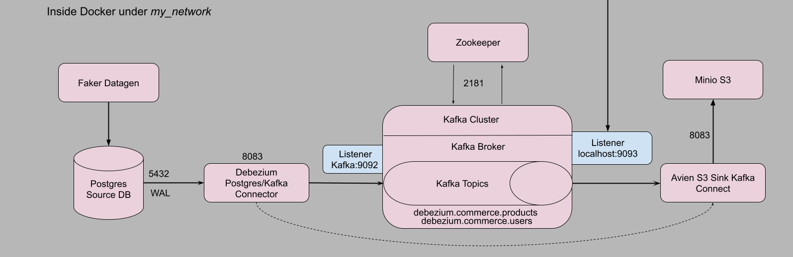
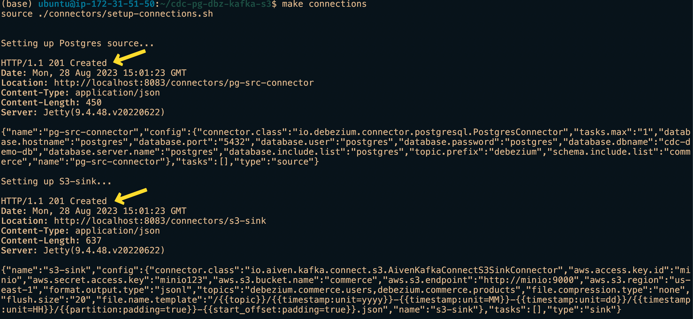
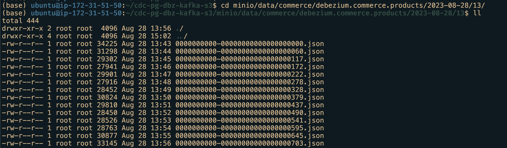
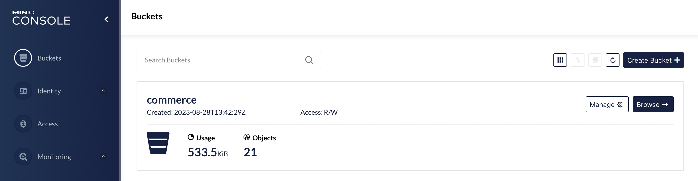
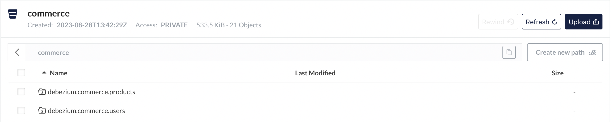
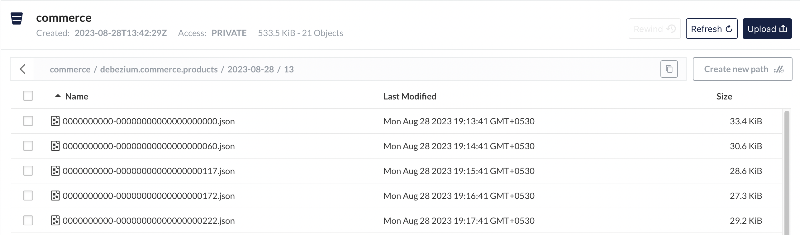
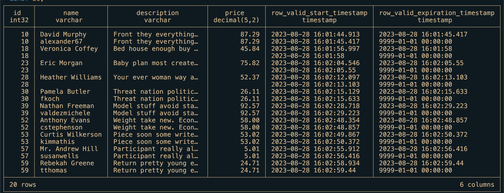

Introduction
Change Data Capture(CDC) is a mechanism in which every change committed to a row in a table is captured and sent to downstream applications. This CDC post answers some of the questions:
How to transfer change data from source database downstream through Kafka?
How does Debezium help with CDC?
How to ingest data from Kafka topics into a warehouse for analytics?
We will use a simple CDC project to explore the data pipeline to get data from upstream to downstream consumers.
Full disclosure - this post and project is inspired from Start Data Engineering’s blog post. I highly recommend reading his posts. It is highly informative. Although, I use his template, the data, data pipeline setup, this blog post are entirely my work.
What is CDC and why is it needed?
CDC is a process of capturing all the data changes from source in the upstream and send it to consumers/applications in the downstream. The sources are usually databases and sinks/consumers/applications are data warehouses for analytics, another database for backup, caches.
One of the main reasons of using CDC is to have minimal impact whilst migrating data between databases. Through continuous data change stream it is possible to quickly and efficiently forward data to downstream applications.
In this post we will use the log method of capturing change from the source system using Debezium.
Capture change from source system
As the source systems are usually databases, we use their logs to CDC. Postgres has Write Ahead Log(WAL) and MYSQL Binlog. More on WAL later.
Making changes available to consumers
Usually there are two options available to forward captured change data to downstream applications:
- Use a shared location such as S3, Kafka.
- Directly load the change data into a consumer system.
We will explore option 2 as our data throughput is smaller.
Project
Objective
Observe and monitor a postgres DB source with a schema commerce and tables users and products. When there is a change in their rows, we will capture those, send it downstream through Apache Kafka, store it in a storage service such as MinIO and make it available for analytics through duckDB.
Before I begin explaining the project’s data pipeline in detail, let me quickly give you the steps to reproduce it. This way you can get started already and read the details later.
Challenges faced
If you’re curious like me, it is always the challenges that make a good story to tell others. Instead of going in length about each challenge, I will just list a few that I found harder.
Figuring out why decimal/numeric data type variables from source don’t reach the destination with same values. I went from source to sink to Kafka to Debezium to finally discover that it is an issue with Debezium Kafka Connect.
Understanding various configurations for Apache Kafka and which ones are needed while starting its Docker container.
Learning how WAL works and the significance of CDC
Architecture

Prerequisites and Setup
We use Ubuntu 20.04 LTS AWS EC2 machine for the project. Full source code here.
We need the following:
Docker version >= 20.10.17 and Docker compose v2 version >= v2.10.2,
make,
optional, python >= v3.7.
To make things easier I have scripted these prerequisites. Just clone my repo and run the instructions I provide.
clone and install prerequisites
sudo apt update && sudo apt install git make -y
git clone https://github.com/dr563105/cdc-debezium-kafka.git
cd cdc-debezium-kafka
make install_conda
make install_docker
source ~/.bashrc- 1
- Installs Miniforge. Optional but recommended.
- 2
- Installs Docker and Docker-compose.
Logout and log in back to the instance. To test docker if it is working, run
check if docker is installed
docker run --rm hello-world # should return "Hello from Docker!" without errorsNow we’re ready to execute our project. I highly encourage readers to use makefile as it makes setup highly efficient.
Executing CDC project
cd cdc-debezium-kafka
export POSTGRES_USER=postgres
export POSTGRES_PASSWORD=postgres
export POSTGRES_DB=cdc-demo-db
export POSTGRES_HOST=postgres
export DB_SCHEMA=commerce
export AWS_KEY_ID=minio
export AWS_SECRET_KEY=minio123
export AWS_BUCKET_NAME=commerce
make up # runs all docker containers
#wait for 60 seconds allow all containers to be up and running
make connections # setup connectors
#wait for 100-120 seconds to allow data to be pushed to Minio(S3).Open a browser and go to localhost:9001 to open up Minio UI. Login with minio as username and minio123 as password. Then navigate to buckets -> commerce -> debezium.commerce.products and further to get to the json files. Similarly to reach debezium.commerce.users table json files.
These json files contain the change data(Upsert and delete) for respective tables. From here we can use duckdb to analyse data. There you have it, a complete data pipeline that fetches change data from the source and brings it to the sink(downstream).
Deleting resources
To bring down all container and return to the original state, run the following instructions
restoring to original state
make down #shuts down all project processes and docker containers
# To delete minio buckets with json files and DB volume.
# Docker creates directories with root as owner.
# So root access is needed to delete them.
# sudo rm -rf minio/ psql_vol/Testing
Testing the data pipeline is one of the important aspects of data engineering. Read more about it in a detail blog here
testing
export TEST_POSTGRES_USER=test_postgres
export TEST_POSTGRES_PASSWORD=test_postgres
export TEST_POSTGRES_DB=test_cdc-demo-db
export TEST_POSTGRES_HOST=test_postgres
export TEST_DB_SCHEMA=commerce
export TEST_AWS_KEY_ID=test_minio
export TEST_AWS_SECRET_KEY=test_minio123
export TEST_AWS_BUCKET_NAME=commerce
make tup
make ci- 1
- Opens similar test containers for source DB and datagen.
- 2
-
Executes
pytestand displays if passed or failed.
Test suite can be run only once. Running it again will result in error as the previous run data is still present in the DB.
To shutdown after testing,
make tdown
sudo rm -rf test_psql_vol/- 1
-
Need to remove the mounted volume
test_psql_volif you want to run test suite again.
Data Pipeline detailed explanation
Each section contains code and sufficient explanation. Therefore, it is long. I advise giving an overview before coming back for a thourough read.
We will setup each component in the data pipeline individually and use Debezium Kafka Connect to connect them.
Loading data into Postgres DB source
We leverage Postgres docker bootstrap feature to create our table and set permissions for replication. For more on bootstrap feature, go this link, navigate to Initialization scripts.
In our case we have a file init.sql mounted to /docker-entrypoint-initdb.d.
init.sql
-- create schema commerce
CREATE SCHEMA commerce;
-- Use commerce schema
SET search_path TO commerce;
-- create a users table
CREATE TABLE IF NOT EXISTS users (
id SERIAL PRIMARY KEY,
username VARCHAR(255) NOT NULL,
email_address TEXT NOT NULL
);
CREATE TABLE IF NOT EXISTS products (
id SERIAL PRIMARY KEY,
name VARCHAR(255) NOT NULL,
description TEXT,
price REAL NOT NULL
);
ALTER TABLE users REPLICA IDENTITY FULL;
ALTER TABLE products REPLICA IDENTITY FULL;- 1
- The price has to be REAL data type as debezium encodes NUMERIC or DECIMAL data types to BigDecimal Binary. For more on that, read here.
- 2
- To allow for replication. Records the old values of all columns in the row in the WAL.
WAL - Write Ahead Log
A Write-Ahead log is a feature especially in Databases to ensure integrity of data and durability in case of system failure. It is a process of recording changes in sequential logs before writing directly into disk(Databases).
Our intended changes are first written to the log and then passed onto DB. Upon successful transaction, the log is updated with a sequence number. Upon system failure and consective restart, the DB polls the log to resume its operation. This way systems can acheive ACID properties for reliable and robust database management.
The SQL command ALTER TABLE users REPLICA IDENTITY FULL; instructs Postgres to use all columns of the users table to identify rows when replicating changes.
Generating data for upload
We use faker python library to generate fake data into the tables - users and products. We use the psycopg2 Postgres python library to establish database(DB) connection. And then use it to commit the generated data.
Update - Sep 5, 2023 - The datagen script has changed to accomodate testing but the below source code logic remains the same.
user_product_data.py
conn = psycopg2.connect(database=f'{POSTGRES_DB}',
user=f'{POSTGRES_USER}',
password=f'{POSTGRES_PASSWORD}',
host=f'{POSTGRES_HOSTNAME}'
)
curr = conn.cursor()
curr.execute(f"INSERT INTO \
commerce.users (id, username, email_address) \
VALUES (%s, %s, %s)", (id, fake.user_name(), fake.email())
)
curr.execute(f"INSERT INTO \
commerce.products (id, name, description, price) \
VALUES (%s, %s, %s, %s)", (id, fake.name(), fake.text(),
(fake.random_int(min=1, max=999_999))/100.0)
)
conn.commit()We can use the same script to simulate(with sleep) updating and deleting a few rows at random.
user_product_data.py
sleep(0.3)
# update 10 % of the time
if random.randint(1, 100) >= 90:
curr.execute("UPDATE commerce.users \
SET username = %s\
WHERE id = %s",(fake.user_name(), id)
)
curr.execute("UPDATE commerce.products \
SET name = %s \
WHERE id = %s",(fake.user_name(), id)
)
conn.commit()
sleep(0.4)
# delete 5 % of the time
if random.randint(1, 100) >= 95:
curr.execute("DELETE FROM commerce.users WHERE id = %s",(id,))
curr.execute("DELETE FROM commerce.products WHERE id = %s", (id,))
conn.commit()
curr.close()- 1
-
sleepallows for data to be inserted and be ready sequential operations.
Associated Docker configuration
docker-compose.yml for data upload into source DB
cdc_commerce_postgres:
container_name: source-db
image: debezium/postgres:13-alpine
hostname: ${POSTGRES_HOST}
ports:
- 5432:5432
environment:
POSTGRES_USER: ${POSTGRES_USER}
POSTGRES_PASSWORD: ${POSTGRES_PASSWORD}
POSTGRES_DB: ${POSTGRES_DB}
volumes:
- "./postgres/init.sql:/docker-entrypoint-initdb.d/init.sql"
- "./psql_vol:/var/lib/postgresql/data:rw"
networks:
- my_network
datagen:
build: ./generate-data
image: cdc-datagen
container_name: datagen
restart: on-failure
environment:
POSTGRES_USER: ${POSTGRES_USER}
POSTGRES_PASSWORD: ${POSTGRES_PASSWORD}
POSTGRES_DB: ${POSTGRES_DB}
POSTGRES_HOST: ${POSTGRES_HOST}
DB_SCHEMA: ${DB_SCHEMA}
depends_on:
- cdc_commerce_postgres
networks:
- my_network- 1
- Environment variables to spin up a Postgres DB server is supplied from the terminal.
- 2
- Utilising Postgres bootstrap feature we can create our schema, define and create tables.
- 3
-
For
datagencontainer DB env variables are supplied. Theuser_product_data.pyuses these variables to populate the tables. - 4
-
Ofcourse, to populate the tables, source DB must be ready.
depends_onproperty defines the dependency between two services.
Now our source DB is populated.
Apache Kafka
Apache Kafka is a message stream processing framework. The change data from the source DB must be streamed downstream. Kafka facilitates this process.
Kafka uses a meta-data service management tool called Zookeeper. It handles the configurations needed for Kafka brokers to perform their tasks properly.
Using docker properties, we invoke kafka and zookeeper services.
docker-compose config for Zookeeper and Kafka
zookeeper:
image: debezium/zookeeper:2.4
container_name: zookeeper
ports:
- "2181:2181"
networks:
- my_network
kafka:
container_name: kafka
image: debezium/kafka:latest
ports:
- "9093:9093"
environment:
- ZOOKEEPER_CONNECT=zookeeper:2181
- KAFKA_INTER_BROKER_LISTENER_NAME=LISTENER_INT
- KAFKA_LISTENER_SECURITY_PROTOCOL_MAP=LISTENER_INT:PLAINTEXT,LISTENER_EXT:PLAINTEXT
- KAFKA_ADVERTISED_LISTENERS=LISTENER_INT://kafka:9092,LISTENER_EXT://localhost:9093
- KAFKA_LISTENERS=LISTENER_INT://kafka:9092,LISTENER_EXT://0.0.0.0:9093
depends_on:
- zookeeper
networks:
- my_network- 1
-
Zookeeper utilises port
2181for its service. - 2
-
Kafka communicates with zookeeper through
2181port. - 3
-
Kafka uses this host/ip to interact with themselves. Here it is
kafka:9092. - 4
- Definition of security protocol between listener names and their protocols. Here it is just plain text.
- 5
-
Internally Kafka brokers communicate with themselves using
9092. With others inlocalhost:9093.
Read more on Kafka Listerners here.
Apache Kafka configuration can be confusing. It is advised to start simple and add in as needs demand.
Next, up is to setup the sink or the final destination.
Storage - Minio S3
We want to store our message streams from Kafka into a storage as files. We utlise Minio an object storage service as it mimics AWS S3.
To set it up, as usual we configure its properties through docker-compose.
docker-compose for Minio storage
minio:
image: minio/minio:RELEASE.2022-05-26T05-48-41Z
hostname: minio
container_name: minio
ports:
- '9000:9000'
- '9001:9001'
volumes:
- "./minio/data:/data"
environment:
MINIO_ROOT_USER: ${AWS_KEY_ID}
MINIO_ROOT_PASSWORD: ${AWS_SECRET_KEY}- 1
-
miniodirectory is created and it is mounted as volume. - 2
- To mimic AWS S3, we can pass credentials as env variables.
There is another service that creates buckets inside the mounted volume. I leave that to the reader as a self-exercise.
Debezium Kafka Connect
All the individual blocks are now prepared, and the remaining task is to connect them.
Setting up Debezium involves two parts:
Connect to Source DB
Connect Kafka topics to Minio S3 storage
Debezium supports Postgres source using Kafka connect natively but as a sink connector to S3 it lacks functionality. So we borrow Kafka connect, add in a plugin that recognises both Kafka topics and S3 storage.
There are several services which offers sink connectors but for simplicity sake, I use an open source service in Aiven.
So, with the help of docker-compose, we use debezium/connect docker image and install Aiven S3 connector plugin on top of it.
docker-compose for Debezium connect
debezium-connect:
container_name: debezium-connect
build: ./sink-connector
ports:
- "8083:8083"
environment:
- BOOTSTRAP_SERVERS=kafka:9092
- GROUP_ID=1
- CONFIG_STORAGE_TOPIC=my_connect_configs
- OFFSET_STORAGE_TOPIC=my_connect_offsets
- STATUS_STORAGE_TOPIC=my_connect_statuses
depends_on:
- zookeeper
- kafka
networks:
- my_network- 1
- Installs Aiven S3 connector plugin.
- 2
-
Debezium connects to Kafka as a producer and Aiven S3 Kafka Connect monitors Kafka topics as a consumer. Importantly this is the bootstrap-server to communicate within the docker network
my_network.
The Debezium(producer) connector still doesn’t know from where it is fetching the data from or the Aiven Connect(consumer) sending the data to.
Activating the traffic in the pipeline
To activate the traffic flow from source to destination, we need to supply source and destination link configurations. This is acheived through json connector configuration.
Apache Kafka uses REST API so that means a JSON data goes into the body of the POST request. Conveniently there is curl command that can be used to request. Though curl commands allows to pass json files to the data option, the JSON format as such require sensitive information properties to be hard-coded. That puts system security at risk.
Fortunately for us, a shell script allows for sensitive information to be masked while being supplied at run time(more on it here). It is indeed that approach we take for our task to connect the blocks in the pipeline.
setup-connections.sh
curl --include --request POST --header "Accept:application/json" \
--header "Content-Type:application/json" \
--url localhost:8083/connectors/ \
--data '{
"name": "pg-src-connector",
"config": {
"connector.class": "io.debezium.connector.postgresql.PostgresConnector",
"tasks.max": "1",
"database.hostname": "'"${POSTGRES_USER}"'",
"database.port": "5432",
"database.user": "'"${POSTGRES_USER}"'",
"database.password": "'"${POSTGRES_PASSWORD}"'",
"database.dbname": "'"${POSTGRES_DB}"'",
"database.server.name": "postgres",
"database.include.list": "postgres",
"topic.prefix": "debezium",
"schema.include.list": "commerce",
"decimal.handling.mode": "precise"
}
}'- 1
- Debezium connector standards.
- 2
- Supplying env variables to the properties
- 3
-
Usually Kafka topic names are just table names. So in our case, it will be
debezium.commerce.productsanddebezium.commerce.users. - 4
-
This property can adjusted to
doublepreserve source’s decimal or numeric data types.
Similarly we can setup sink connector.
setup-connections.sh
curl --include --request POST --header "Accept:application/json" \
--header "Content-Type:application/json" \
--url localhost:8083/connectors/ \
--data '{
"name": "s3-sink",
"config": {
"connector.class": "io.aiven.kafka.connect.s3.AivenKafkaConnectS3SinkConnector",
"aws.access.key.id": "'"${AWS_KEY_ID}"'",
"aws.secret.access.key": "'"${AWS_SECRET_KEY}"'",
"aws.s3.bucket.name": "'"${AWS_BUCKET_NAME}"'",
"aws.s3.endpoint": "http://minio:9000",
"aws.s3.region": "us-east-1",
"format.output.type": "jsonl",
"topics": "debezium.commerce.users,debezium.commerce.products",
"file.compression.type": "none",
"flush.size": "20",
"file.name.template": "/{{topic}}/{{timestamp:unit=yyyy}}-{{timestamp:unit=MM}}-{{timestamp:unit=dd}}/{{timestamp:unit=HH}}/{{partition:padding=true}}-{{start_offset:padding=true}}.json"
}
}'- 1
- Sink connector actively listens to these topics to receive data.
- 2
- File generated have templated filename.
Deployment
To deploy all the components we can use these commands
setup data pipeline
make up
make connections- 1
- Fires up all the services.
- 2
- Links source to Kafka and Kafka topics to Minio S3.

On successful connection establishment, we will 201 created message as shown in the below screenshot.

If done correctly, we should have successfully connected the source to the destination. We will wait a few minutes to have the files appear in the Minio commerce bucket.

We can also use the Minio UI available at localhost:9001. Use the Minio’s credentials supplied as env variables to login.



Analysis
The next part would be to use an analytics DB as such as DuckDB to perform analytics. A sample query that can used to generate SCD2 table.
analysis.sql
WITH cte AS (
SELECT
COALESCE(CAST(json->'value'->'after'->>'id' AS INTEGER), CAST(json->'value'->'before'->>'id' AS INTEGER)) AS id,
json->'value'->>'before' AS before_row_value,
json->'value'->>'after' AS after_row_value,
CASE
WHEN json->'value'->>'op' = 'c' THEN 'CREATE'
WHEN json->'value'->>'op' = 'd' THEN 'DELETE'
WHEN json->'value'->>'op' = 'u' THEN 'UPDATE'
WHEN json->'value'->>'op' = 'r' THEN 'SNAPSHOT'
ELSE 'INVALID'
END AS operation_type,
json->'value'->'source'->>'lsn' AS log_seq_num,
epoch_ms(CAST(json->'value'->'source'->>'ts_ms' AS BIGINT)) AS source_timestamp
FROM
read_ndjson_objects('minio/data/commerce/debezium.commerce.products/*/*/*.json')
WHERE log_seq_num IS NOT NULL
)
SELECT
id,
CAST(after_row_value->>'name' AS VARCHAR(255)) AS name,
CAST(after_row_value->>'description' AS TEXT) AS description,
CAST(after_row_value->>'price' AS NUMERIC(10, 2)) AS price,
source_timestamp AS row_valid_start_timestamp,
CASE
WHEN LEAD(source_timestamp, 1) OVER w_lead_txn_timestamp IS NULL THEN CAST('9999-01-01' AS TIMESTAMP)
ELSE LEAD(source_timestamp, 1) OVER w_lead_txn_timestamp
END AS row_valid_expiration_timestamp
FROM cte
WHERE id IN (SELECT id FROM cte GROUP BY id HAVING COUNT(*) > 1)
WINDOW w_lead_txn_timestamp AS (PARTITION BY id ORDER BY log_seq_num)
ORDER BY id, row_valid_start_timestamp
LIMIT 20;
Making SCD2 table is out of scope for this project but no worries I will go through it another post.
Conclusion
In this post, we saw a simple project that explore the advantages of change data capture using Debezium and Kafka Connect and its implementation. I hope you found it as informative as I found it while developing the project. As always please feel free to contact me on the links provided. I would love to hear your comments.